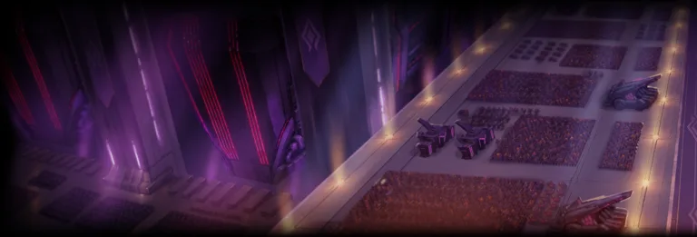

Amelia Gray has arrived with a camera, a new short story and enough supporting files to keep an archivist busy. The 3.57.0 capture adds a complete Earth hero package, a second Invader Reporter adventure, new outfits and a fresh run of events. Halloween also returns to Heavenhold, while a few existing systems receive smaller corrections.
This deep dive compares the previous 3.55.0 snapshot with the supplied 3.57.0 Korean APK and phone data, captured on 29 October 2026. It therefore includes intervening changes, including regional 3.56 configuration. It is a reading of the recovered files, rather than an official list of everything deployed on every server. Story discussion below stays clear of plot revelations; the images show the new cast and environments.
Amelia gets the headline
The English localization names the new hero Invader Reporter Amelia, and her biography introduces Amelia Gray (A. Gray), an Invader war correspondent. Her internal identifier is, consistently, indaver_journalist.
Yes, indaver. The reporter has reached the front line before the spellchecker. We have preserved the spelling in source links: correcting a journalist's typo is one thing; breaking all her asset references is quite another.


Normal Amelia and her Myth form. These transparent images are assembled from the game's original Spine illustration data, using its idle pose. Click either image for the full PNG. The separate scenery and floating effects are omitted; these are not cutouts of the website's promotional image.
Amelia is an Earth, Unique hero using the basket weapon class. Three ordinary evolution records and one Myth record share origin ID 707; that is one new hero with progression, not four separate releases. The package includes an exclusive weapon and its Myth evolution, evolution/Myth stones, awakening layouts, collection entries, a profile, battle actions and new visual assets. The normal hero records recommend guild raid, but a recommendation flag is not a damage ranking.
Her camera does not make every attack ranged. The three normal combo actions and chain skill are tagged Melee; the exclusive weapon skill is tagged Projectile. Her party option increases Earth attack. Co-op also has its own classifications: the regular co-op field says supporter, while Expedition marks a melee dealer. Those mode-specific labels should not be collapsed into a single universal role.
Open Amelia's profile · Inspect the hero records · Find the artwork.
What the new combat data actually says
The useful numerical changes are concentrated in Amelia's new kit. Her chain action accepts All and connects to Down, deals a stored 400% of DPS as melee damage and applies a 20% DEF reduction for 5 seconds. The Myth override increases the damage parameter to 430% and extends that DEF reduction to 10 seconds.
| Configured effect | Normal | Myth-linked record |
|---|---|---|
| Chain damage parameter | 400% of DPS | 430% of DPS |
| Chain DEF reduction | 20% for 5 seconds | 20% for 10 seconds |
| Exclusive melee-attack buff | 15% for 15 seconds | 20% for 15 seconds |
The new option and buff records also define critical-rate support, a healing ratio, stackable attack/defense effects and a Myth leader action. The leader action carries a 450% DPS parameter and selects critical-rate buff references by content type. These are configured effects: the table alone does not establish their complete trigger sequence, real fight uptime or final team damage. In particular, similarly named normal and Myth buff records are not proof that every value automatically replaces its counterpart.
The exclusive weapon entries are cwp_indaverjournalist_epic and cwp_indaverjournalist_myth. Their association is explicit through ExclusiveCharacterId: 707. The Myth weapon is an evolution target, with its own stored damage, recovery and option data. The patch also introduces a 3.57 exclusive-weapon selection box; its choices are inspectable in the item table.
Battle actions · Buff records · Options · Exclusive weapons.
Back inside the Invader ship
The main new playable-content package is the second Invader Reporter short story, stored as shortstory_invader_reporter_2. It connects chapter 70018, stage 700180001, quest 7002401 and the new map short_story_invader2. The stage is configured for 15 stamina and recommended level 70. Twenty-four additional Lua paths supply its story and section logic, including a following reporter companion.
The recovered map layout: 14,375 placed tiles across 20 layers. Open it to pan, zoom and inspect individual placements. This overview is a reconstruction from stored map data.

One of the new story's theatre backgrounds. The environment package includes ship interiors, props, effects and broadcast scenery.
The NPC table adds 38 records for this story. Its cast includes soldiers, guards, agents, scientists, trainers, civilians and children, with several appearances sharing a rig through different skins. New character bundles include ir_npc_a, ir_npc_b, invader_reporter_2 and invader2_inspector_superior. Some supporting cast use existing Invader assets, so 38 NPC records do not mean 38 newly drawn characters.
Original front-facing idle frames reconstructed from the new story rigs. Labels describe the asset roles; they are not claims about playable characters or newly introduced combat monster types. Open the full-size cast gallery.

The combat monster table is unchanged across the comparison. The new soldier and inspector artwork should therefore be described as story cast and enemy-looking characters, not as proof of new combat enemy types or boss mechanics. A familiar guard can still make a reporter's day worse without needing a new database species.
Fifteen new quest-item entries support the adventure, including bottles, sorting cards, a keycard, a box, paper and a crayon. There are also new dialogue strings and an updated version of the earlier invader_reporter map. No new main-story world appears among the added chapter/stage records.
One activation detail matters: the new chapter has Visible: false, although the stage is marked open and the event shortcut points to it. The files establish a connected story package and its configured entry points; they do not independently prove that the chapter is accessible from every live client menu.
Explore the new map · Compare the earlier reporter map · Browse the story NPCs · Read the stage record.
The wardrobe department files its report
Three hero costumes join the item table: Admiral Haruka, Little Jiangshi Geumrin and Scoop Reporter Amelia. Two staff costumes accompany them: Jiangshi Brush and the saber-shaped skin stored as staff_saber. A saber-shaped staff is a perfectly reasonable workplace accessory when your workplace is Guardian Tales.
| Saber-shaped staff skin | Jiangshi Brush |
|---|---|
Original costume idle frames and staff icons, enlarged for visibility. The three costumes target Haruka, Geumrin and Amelia respectively. These entries establish the assets, not their live shop prices or purchase periods.
The 25 net new item records break down into two exclusive-weapon forms, fifteen story quest items, three hero costumes, two weapon costumes, two progression stones and one selection box. Amelia also adds ten collection/hero-knowledge entries and twelve Heavenhold resident reaction records. Her awakening tree brings the expected node and layout data; those hundreds of rows belong to the same character package.
Costume and item records · Collection data.
Events: the calendar has regional editions
Amelia's roadmap event 33 contains 138 reward nodes and 15 mission records. Its playable period matches the story/pickup shortcut, and rewards remain claimable for an additional week. Guardian Pass 58 uses Amelia's character and illustration references, with 30 levels and the existing infinite mode. Festival Pass 41 adds another season of the familiar system.
The following are the 2026 calendar dates stored for KakaoKorea and KakaoGlobal, without converting them to a reader's timezone. Some source fields include +09; others omit an offset. They are configured periods, not a live-service availability check.
| Content | Korea | Global |
|---|---|---|
| Amelia story/pickup shortcut and roadmap | 29 Oct.–12 Nov. | 10–24 Nov. |
| Roadmap reward claim deadline | 19 Nov. | 1 Dec. |
| Guardian Pass 58 | 29 Oct.–25 Nov. | 10 Nov.–7 Dec. |
| Festival Pass 41 | 29 Oct.–19 Nov. | 10 Nov.–1 Dec. |
| Halloween decorations and resident requests | 29 Oct.–26 Nov. | 27 Oct.–24 Nov. |
| Guild raid 46 | 31 Oct.–6 Nov. | 12–18 Nov. |
The wider comparison also adds Bingo 23 with seven boards, returning-player event 22 with a 14-day reward program, and a 28-day newcomer attendance campaign. The new return/newcomer eligibility windows begin on 29 October in Korea and 10 November globally; their requirements still apply. Earlier return/attendance periods are extended to those handover dates.
Arena and Master Arena gain season/map rotation entries. Guild content adds raid seasons 45 and 46, Meteor 91, and Boss Rush 37, with their associated schedules, missions or shop records. These are new rotations of existing activities. They do not introduce new game modes.
Other regional entries belong to a different calendar: Guardian Pass 59 features Geumrin and has a current Kong period of 28 October–25 November, while Festival Pass 40 has a Kong period of 28 October–18 November. Their Korea/Global fields are absent or historical placeholders. Mixing these rows into the Global schedule would create events the files do not actually promise.
Roadmap · Passes · Season dates · Raid configuration.
Halloween, familiar faces and smaller corrections
Heavenhold, the lobby village and the farm switch their Halloween schedules from 2025 to 2026. The referenced decorations, music and five resident requests are carried over. The requests keep their rewards, but their stored WeightAdd rises from 0 to 10. That is a selection-weight change, not enough information to quote an exact appearance probability. The pumpkins have renewed their contract; the reward accountant has kept last year's spreadsheet.
Seira: four normal/Myth passive buffs now use their own special_option buff groups instead of the corresponding cwp_option groups. Their numerical values stay the same. This looks like a correction to buff interaction/grouping, but the data alone does not quantify its effect in battle.
Geumrin: the existing hero variants, exclusive weapons, stones, sticker pack and related collections change their Kong version gate from v9.99 to v3.56. The five-star record also drops the Kong: 0 Myth override. These are regional availability changes; her existing HP, attack and defense values do not change. Her memorial chapter receives a Korea version-gate adjustment, and Astoria's weapon collections receive a Test-region gate.
Boss Rush: guildpunchking.AbusingAlertRound changes from 1200 to 1400. The name suggests an internal alert threshold, but its exact runtime enforcement is not established here. It should not be reported as a new score cap, extra play time or a damage increase.
Older side content: Succubus Café removes manual item-position/reset calls; Battle Ball initializes an NPC earlier; Blossom/Echo stops forcing a default idle emotion in two places; Kanterbury High School and Movie content change an ambience cue. A shared party-companion list gains the reporter used by the new story. There is also a small NPC portrait cleanup: the dancing-archer T-rex-doll event record replaces a portrait reference of r with null.
Finally, the constants table adds PresetCountS4 with values [20,100,15,5,1] and a 50-gem radar-price entry for the new stage. The preset categories and their activation have not been traced, so this is not a confirmed expanded-preset feature announcement.
Seira's buff records · Halloween configuration · Boss Rush constants · Lua browser.
What the diff does not mean
The phone-source comparison finds 109 added files and 175 modified files, with no missing old source files. At the decoded-record level, 43 collections contain content changes. That is not 43 separate features: a hero appears across actions, buffs, options, progression, items, profiles and localization, and some exported collections duplicate the same logical data.
All 2,674 previous battle-action records retain identical content, and all 10,157 monster records match. The changed existing hero rows are Geumrin's regional edits. There is no broad numerical hero/monster rebalance established by these tables; the specific Seira grouping correction still matters.
English text grows by 978 entries net. The comparison ignores localization IDs when comparing text content, avoiding the trap of calling a moved ID a rewritten line. New artwork, sound and native-binary bytes also do not, on their own, establish a new mechanic. Three additional APK maps—prologue1, prologue2_new and throneroom—improve extraction coverage; they are not three newly released stages.
One test map remains partially decoded, and 23 legacy map formats are not supported by the interactive parser. Those gaps do not prevent inspection of the new reporter map, but they remain part of the archive's coverage limits. The focused evidence download includes every collection's comparison totals and the relevant before/after records, including smaller regional and configuration edits.
Explore the patch yourself
- Amelia's profile and source records.
- Invader Reporter sequel map.
- New story assets.
- 3.57.0 before/after evidence, with counts, source records and localization evidence.
- 3.57.0 archive downloads and snapshot update details.
- The previous v3.55 deep dive, for Astoria, Seira's earlier support-action correction and the scarecrow benchmark change.
Amelia has the camera. The archive has the receipts. We are still waiting for the Invader newsroom to hire a copy editor.